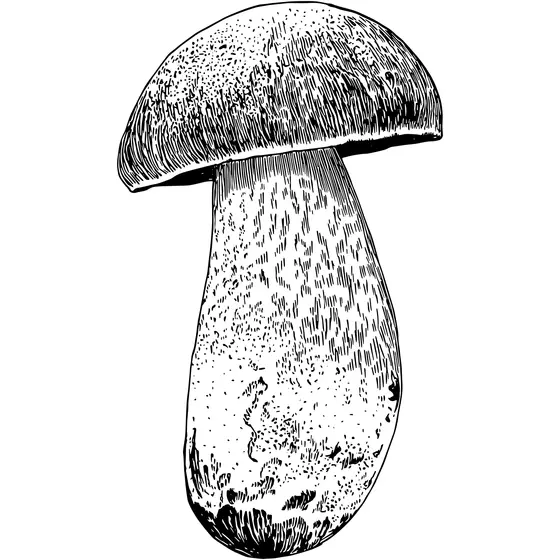

mushrooms
an exploration of the diversity of fungal varieties
home
type
featured
Neoboletus praestigator — “Scarletina Bolete”

Why its interesting
Form:
wide cap balanced by a thick, sturdy stipe.
Texture:
pores underneath the cap create a distinct surface pattern.
Palette:
rich reds and browns offer strong color contrast.